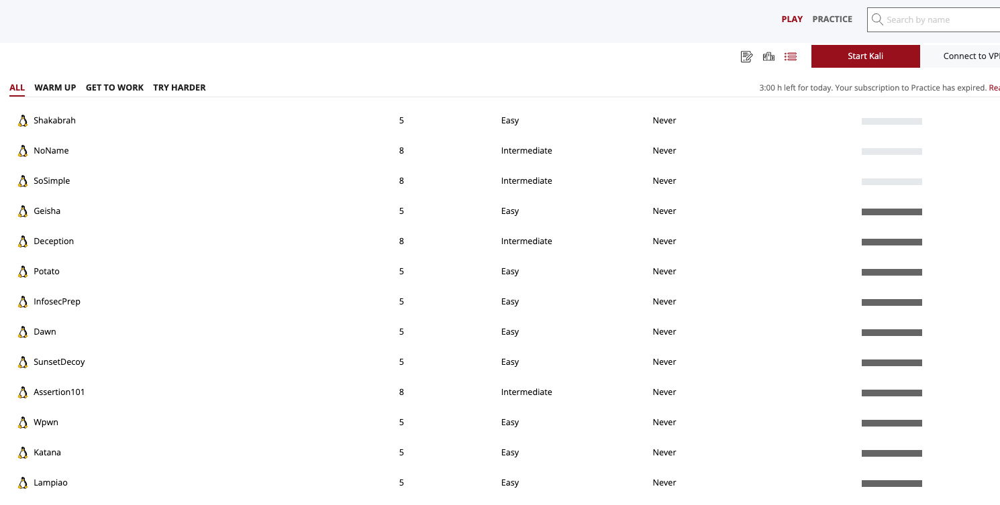

OSCP (Offensive Security Certified Professional) Review
Introduction
On the 27th of February, 2021, I successfully pass the OSCP exam. I will tell/explain my opinions, my methodology on how I did the exam and my preparation.
Pre-Exam
Having already been doing pentest for a few years, I wasn't worried much about the exam.
On a daily basis I was doing web application testing, so in the web part I was pretty confident.
Where I knew I had gaps was the windows privilege escalation part.
To make up for that I bought the Windows Privilege Escalation course
from TheCyberMentor which
gave me a solid foundation on how to do priv esc.
For the Buffer Overflow part my knowledge was quite basic but with the help of our team mentor
Darix Deros(aka KNX)
where in several lessons he gave us the right tools to approach bof in the best way, I strengthened myself on that part as well.
In any case, I also recommend the following labs to more easily dimesticate the bof:
How to prepare the Exam
During the PWK course I completed 50 of 65(if I'm not wrong) of the lab machines.
Once I finished studying the material, finished the labs and ran out of time (I had 60 days of labs) I adopted a different method.
I saw many people follow HTB or TryHackMe lists for OSCP, I instead went straight to Proving Grounds, which was then newly born and focused on here labs.
I started with play topic(from vulnhub) machines to become more and more confident. After completing about 20 of them between easy and medium I moved to the practice section, where former exam machines were posted.

In the practice section, the machines are very interesting. Real OSCP boxes with the same mentality as the exam (Try Harder).
During the machines I learned various new techniques of priv. esc, both in Linux and Windows environment.
By the end of my preparation, I came to take the OSCP exam with 50 machines made of the PWK labs,
and about 70 machines on the proving grounds labs
The Exam
I started my Exam on 27th of February at 7 am in the morning.
After the proctor verified all my data, I was able to download my vpn access and could finally start.
I did not use automation for scanning. Each machine had a separate folder and its own separate nmap scan.
(I recommend learning to use tmux and moving around with various windows in the terminal).
I started with the buffer overflow, where in about 45 minutes, between finding offesets,
badchars and injecing the shellcode I had access to the victim machine.
Taking all the screenshots, writing the python script to exploit it, after 1 hour I got my first 25 points.
Once the buffer overflow was over, I took a look at the results of the various scans, seeing a few machines might have been "easier."
The important thing during the scan is to take breaks. Tackling OSCP without a break is really tough and at some point the fatigue will set in.
Stop and relax. Smoke a cigarette, sleep if you need to but stopping will give your brain a chance to reset and restart more charged than ever.
By about 6 p.m. I had my 70 points. I had completed the two 25-point machines and one 20-point machine. I left the 10 machine for last in case I needed points to get to the minimum threshold. From here let's say it went all downhill. After dinner I completed the 10-point machine and concentrated on the last 20-point machine. I finished my exam with 90 points around 2 am the following day. I made sure I took all the screenshots and had all the material to then complete the report.
Very Important TIPS:Be careful because sometimes there could be rabbit holes. If you see that you are stuck at some point or maybe you do not get anything, take a break and start from another bug, do not focus too much, if it does not come, once you identify the vulnerability, the exploitation is pretty much straightforward, maybe some bypass could be needed.
Final Tips
- Do a lot of machine from maybe HTB or TryHackMe
- Do the practice section on Proving grounds
- The time looks enough, but be ready with all the environment for not loosing time.
- Don’t fall and do not create your own rabbit holes :)
- Take notes during your exam, it will help to mapp the differents machines during the exam
My Credential OSCP